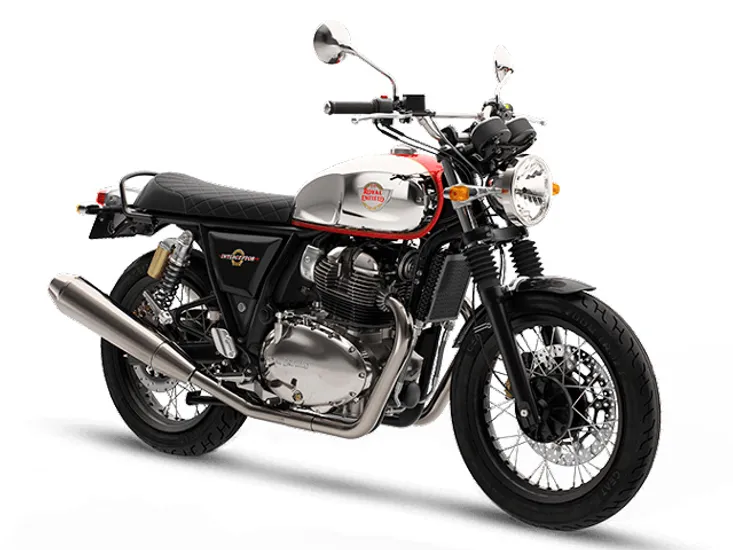

The Royal Enfield Interceptor 650 is a street cruiser motorcycle with the brands signature retro design. The
motorcycle features a curved tank, double-pod instrument cluster, and an up-swept exhaust. The Royal Enfield
Interceptor 650 is powered by a 649cc, air/ oil-cooled parallel-twin engine that produces 47bhp of power and
52Nm of peak torque. The engine is mated to a six-speed manual transmission with slipper and assist clutch
as standard. The bike also features dual-channel ABS as standard.